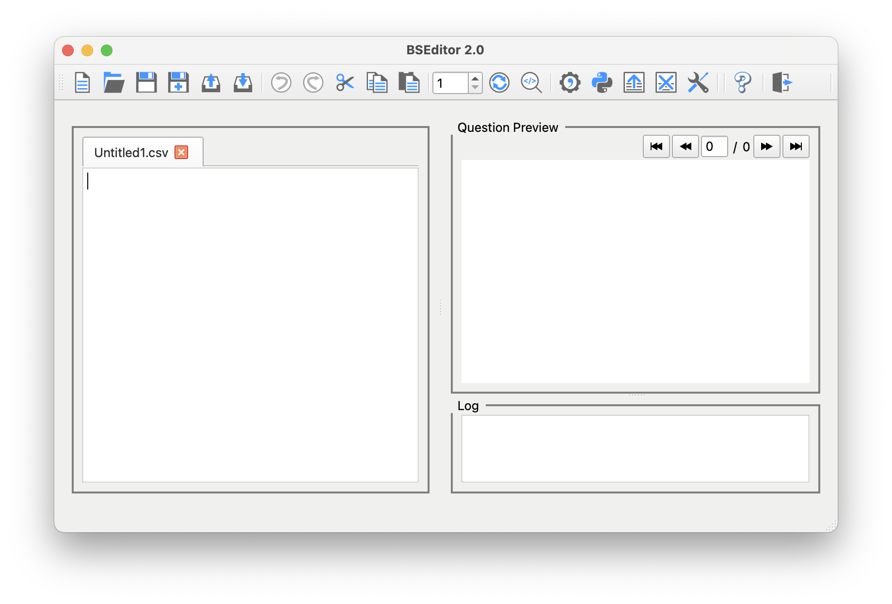

BSEditor is the graphical-user interface to BSGenerator, responsible for single question creation. In time, it will be integrated into a single BSGenerator interface.
Its main application window application is composed of four main areas:

Further to these panels, a set of menus provides access to all the functions offered by the application.This editor allows you to create, load, edit and save questions in CSV format. You can have several files open, which will be organised with tabs. The File, Edit and Question menus offer options related to the content of the currently selected tab.
This area displays a preview of the question being edited, when that function is activated (either through the menu Question / Preview, or with the Preview button). This is a realistic approximation of the question appearance in Brightspace. If more than one question variation is generated, you can use the navigation buttons to switch between different variations.
It also shows which are the correct answers, the question feedback, and the score the current answer will achieve. This is a dynamic display; try out different question answers, and the score will automatically adjust.
This area keeps track of most operations, along with the date and time at which these were activated (the data is purely local). It is helpful when compiling questions, to keep track of potential problems. It can be exported into a text file, and its contents can be cleared at any time. These functionalities are available through the Tools menu, or with the corresponding shortcut buttons.
The Button Toolbar provides shortcuts for all major functionalities. These buttons implement the following functions (from left to right):